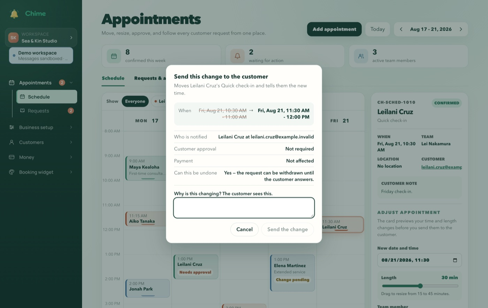
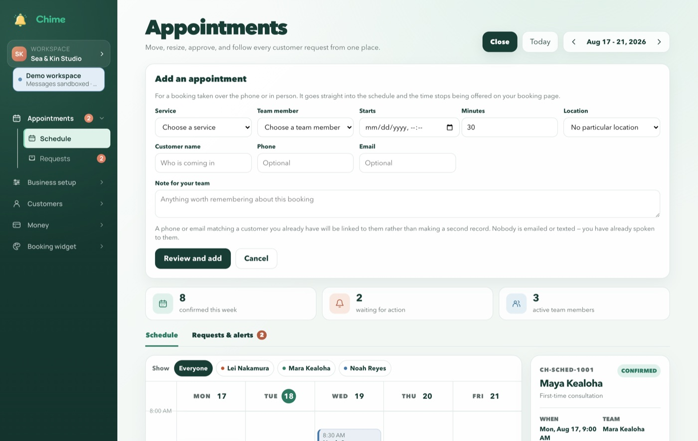
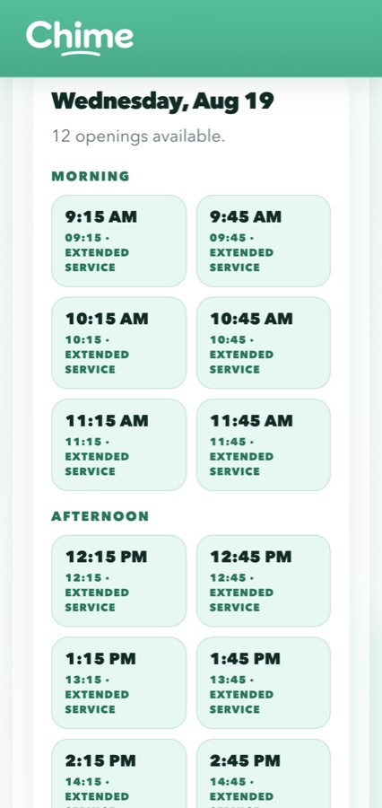
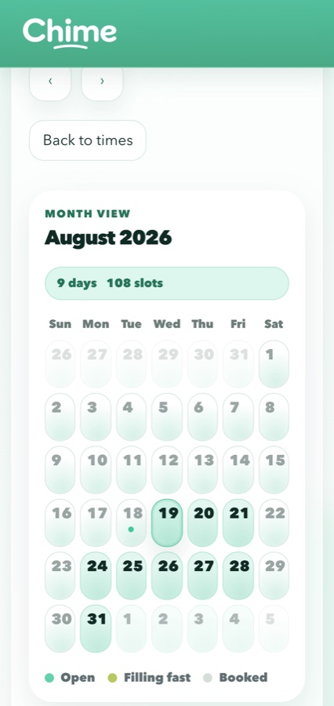
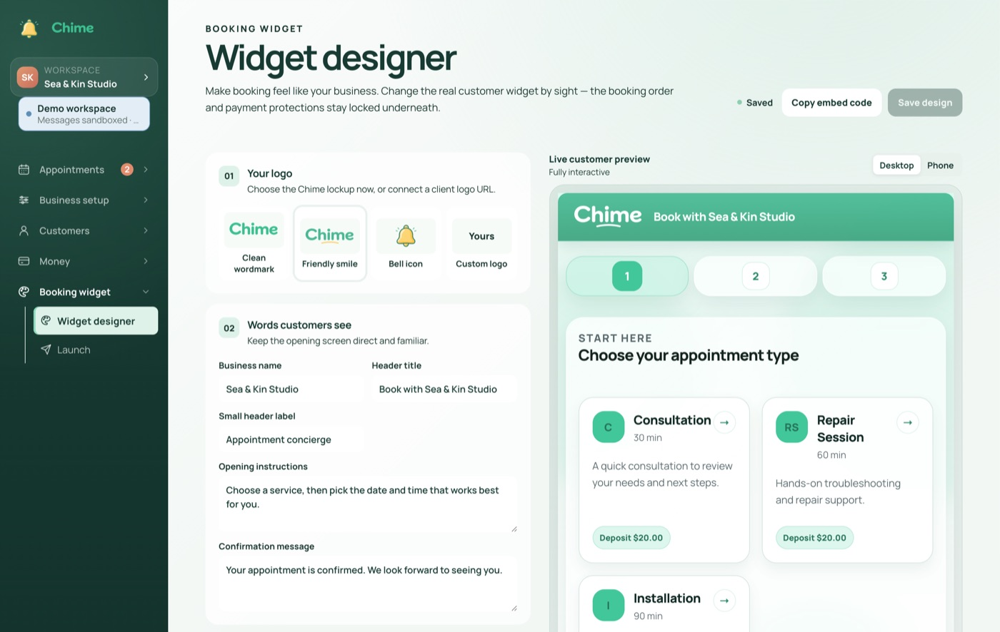
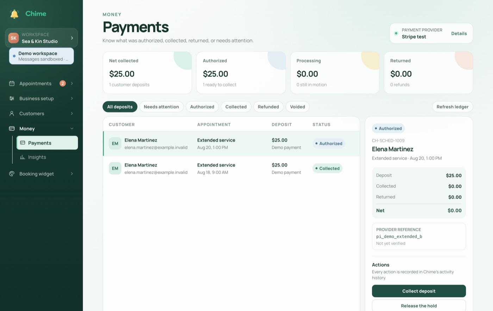
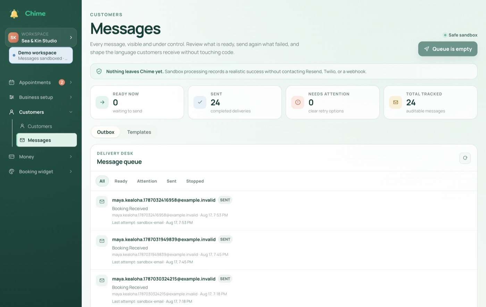

Chime: Booking Platform
A booking widget customers book through, and the operations studio a service business runs the day from. Two products on one database, kept in agreement by the schema between them.

Overview
Chime began as a drop in booking widget: one embeddable React component that took a service business from availability to a confirmed appointment with a refundable card deposit. That widget is still there, and it is now the smaller half of the product.
The other half is an administrator studio, eleven screens where a business actually runs the day: the week's schedule, customer records, deposits and refunds, message templates and delivery, working hours, team, the widget's own appearance, and a launch readiness check. Both halves read and write the same PostgreSQL database through two schemas bridged by triggers, so a booking taken on a phone and an appointment moved in the studio are the same row, seen from two sides.
It ships as a Docker image with its own migrations, seed data, backup and restore tooling, and a fifteen suite check that runs on every push.
Highlights
- The studio a business lives in: a week calendar where appointments are dragged to a new time or stretched to a longer one, with the confirmation showing exactly what the customer will be told before anything is sent. Bookings taken over the phone are entered by hand and immediately stop being offered on the website.
- Deposits with a full lifecycle: authorised when the appointment is booked, captured when the customer arrives, refundable in part or in whole, with every state reconciled against Stripe's own webhooks rather than the customer's browser.
- Messages that can be seen before they are sent: confirmations, reminders and change requests run through editable templates, a delivery queue with retries and suppression reasons, and a sandbox mode that records everything and sends nothing.
- Consequential actions are previewed, not just confirmed: before a change is committed the studio shows what will change, who will be told, what it does to money, and whether it can be undone.
- A widget that survives other people's websites: it renders inside a shadow root, so no host stylesheet reaches it, and sizes itself from its container rather than the window — the same component is correct in a 320px column and a 1200px page.
- Two products, one truth: published availability, services and appointments are projected between the customer schema and the operations schema by database triggers, so neither side can quietly disagree with the other about who is booked when.




Architecture and engineering
- Two schemas, bridged deliberately: the widget keeps its original tables; the studio has its own. Triggers project between them, and a set of cross workspace contract tests assert the bridge holds in both directions — that an appointment entered in the studio takes that time off the website, and that removing it gives the time back.
- Concurrency the operator can feel: writes carry optimistic version checks and idempotency keys, so two people editing the same appointment get a clear refusal rather than a silent overwrite, and a double tapped button produces one booking rather than two.
- A migration ledger with checksums: twenty two migrations across fifty three tables, each recorded with a hash. Editing an applied migration is refused rather than allowed to make two databases disagree.
- Container queries rather than viewport queries: the widget is embedded, so the window is the wrong question. Everything responsive keys off the component's own container, which is why it is correct inside a host's sidebar.
- Isolation as structure, not agreement: the shadow boundary means host CSS cannot reach the widget whatever its specificity — verified against eleven real world host stylesheets, in both directions, so the widget survives the page and the page survives the widget.



Correctness
Fifteen suites run against a real PostgreSQL on every push: the two APIs, the notification worker, the schema bridge, payment safety, accessibility across eleven studio screens, host style isolation, and a layout check that measures each step of the booking flow in screens of scrolling rather than pixels.
The measure of the approach is what it caught. The first run against a build machine found that nothing in the repository could construct the database from scratch. The first accessibility pass against a fresh checkout found the suite had been examining an error screen. And the first real card put through Stripe found four faults that every synthetic test had passed — including that deposits are authorised rather than charged, so the event announcing a successful payment was one the code was not listening for.